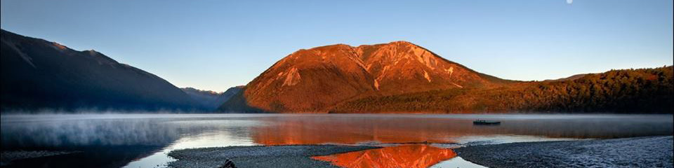
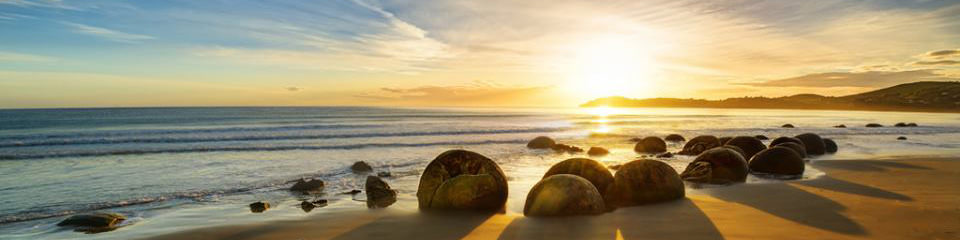

New Zealand Tour Guide Services with Richard Gallagher
“Why Tour Like Sheep ; When Your Tour Can Be More Unique”
With your own private driver & guide NZ Tour Guide Services are your people on the ground, run by Richard and Heather Gallagher. Both born and bred fifth generation kiwi’s, Richard is one of New Zealand’s most versatile freelance Tour Guides and Driver Guides.
With years of professional tourism experience behind him, and a fun, friendly approach to guiding, you can trust your tour in New Zealand will be one to remember and safely driven.
Heather has recently come to assist guide and drive visitors locally. She guides, co-ordinates and takes cruise ship excursions plus offers a Meet & Greet Service for Inbound Travel Agents clients arriving in Christchurch. As well as enjoying guiding cycle tours.
We really enjoy showing folks from all over the world, across our beautiful country. Tourism New Zealand engages our services for accompanying various travel/media clients helping advertise & show case NZ to the World.
For a tour that's interesting and informative, with plenty of fun and with locals, contact NZ Tour Guide Services and keep up with us on:
Services
NZ Tour Guide Services offers personal tour guide or driver guiding services for individuals or small groups. We cater to all travellers; holiday makers, families, media, film or TV crews, trade and company delegations even VIP’s or dignitaries.
Our services are on a private hire or charter basis. We can be available for all or part of your New Zealand visit.
Advanced bookings are essential, and our rates are costed on your actual requirements. Because we deal direct with you, with no middle men, our prices are competitive. We aim to provide same day reply. Quotes; costings and planning will take a little longer and we are flexible on how we achieve this.


Professional Licences:
NZ LTSA passenger service operators licence #32243, issued 1990.
NZ commercial driver licences for small or large vehicles.
Granted exemptions to operate transport tour services by all regional and district councils in New Zealand.
Department Of Conservation Approved: for visits & short walks in most National Parks & Reserves in NZ.